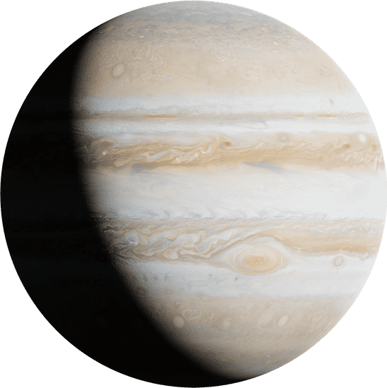

Jupiter

Jupiter was named by the Ancient Romans after the king of the Roman
gods.
Jupiter's Latin name is Luppiter.
Jupiter's Ancient Greek name is Zeus.
The Greek Letters for Jupiter are Δίας (Dias).
Jupiter's diameter is approximately 86,881 miles (139,822 kilometers),
nearly 11 times wider than Earth's diameter of 7,917 miles.